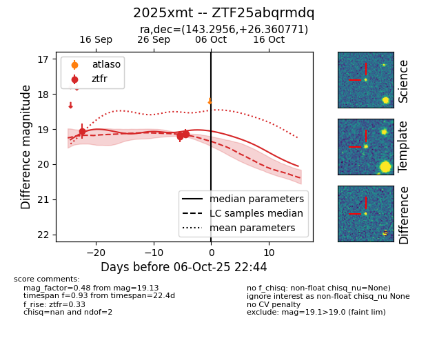

FINK: ZTF25abqrmdq
Lasair: ZTF25abqrmdq
ALeRCE: ZTF25abqrmdq
TNS: 2025xmt
YSE: 2025xmt
ZTF25abqrmdq (ztf,fink)
2025xmt (tns,yse)
equatorial (ra, dec) = (143.2956,+26.36077)
galactic (l, b) = (202.1254,+46.02880)

last ztfr=19.05
1 ztfr detections